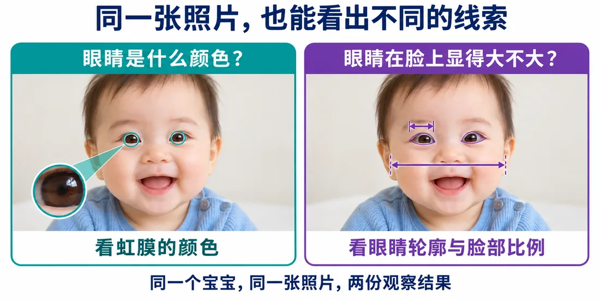
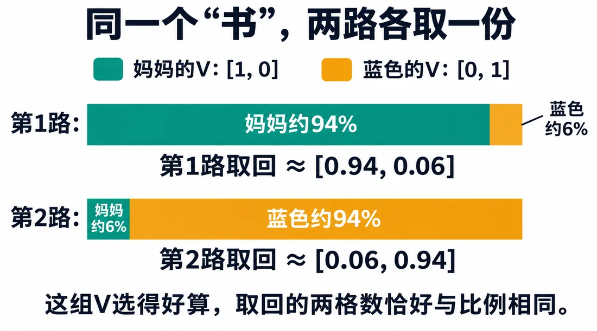
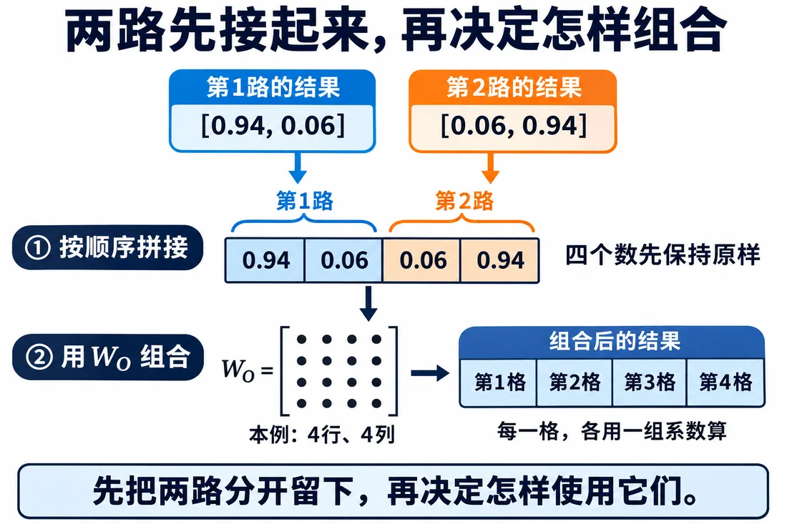

我们在这儿
前面拆 Token、做 QKV、缩放 softmax、V 取回。句中 31 个位置，各能查回一份结果。
可看“书”时，我们想问两件事：
这一篇让它分两路查。
这一篇要解决分成两个注意力头，分别保留不同查找结果，再用 WO 组合。
大概阅读约 12–16 分钟
两个问题，想取的线索不一样：
可“书”拿自己的向量查一回，只能得到一套比例。“妈妈”分到 90%，其他就只剩 10%。
我们想留下两份独立结果：
两份分开存，互不干扰。
就像看宝宝照片：
两路都在看眼睛附近，取回来的线索却不同。
同一个宝宝、同一份资料，分两路各记一份。

头多了，总格数不用跟着多。4 格分两路，每头管 2 格，拼回来还是 4 格。
所以从这一篇开始，改用每行四格的输入，方便看清两路各取回两格，再接成一行四格。
把这两路想成两个负责查资料的小脑袋。同一份资料摆在面前，它们：
这样一路注意力计算，叫一个注意力头。
拿一行 [1,2,3,4] 演示怎么乘 WQ，算出两格的 q。
两个头都读同一张输入表。到同一位置时，它们用各自的 WQ、WK、WV。
这里可以先歇一下，下次从这一站接着读。
让两个头的 WQ、WV 相同，只换 WK。
演示分数是：
先除以 √2，再 softmax。每个头的 q、k 是两格，所以 √d＝√2。
结果，第一路多取“妈妈”，第二路多取“蓝色”。
再给两个词设 v：
结果：
同一份输入，查出两份各有侧重的结果。
让多个头分别查、再组合，叫多头注意力。

两个头各取回两格。
把第一头的两格放前面，第二头接后面，就得到一行四格。这一步叫拼接，四个数都不改。
再给这四个数分别乘系数，加起来算一个输出格。
这些系数排成 4 行 4 列的 WO，共 16 个系数。每个位置都用同一张。
31 个位置都照这套做：
最后仍是 31 行，每行四格，留给下一步。
动手走完两个头，再看静态图：拼接只是把四格按顺序接起来，数本身不改。

拼接确认后，再用矩阵地图把这一篇出现的矩阵整理一遍。
这一篇收个尾
这一篇拿到：两头的独立结果、拼接结果，以及 WO 组合后的四格向量。
下一篇接着看：把新线索加回原输入，不顶替原信息。